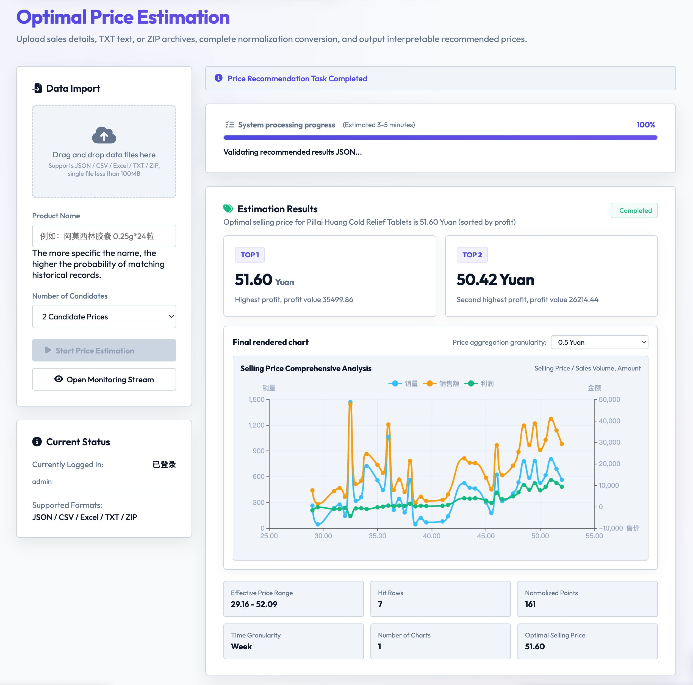
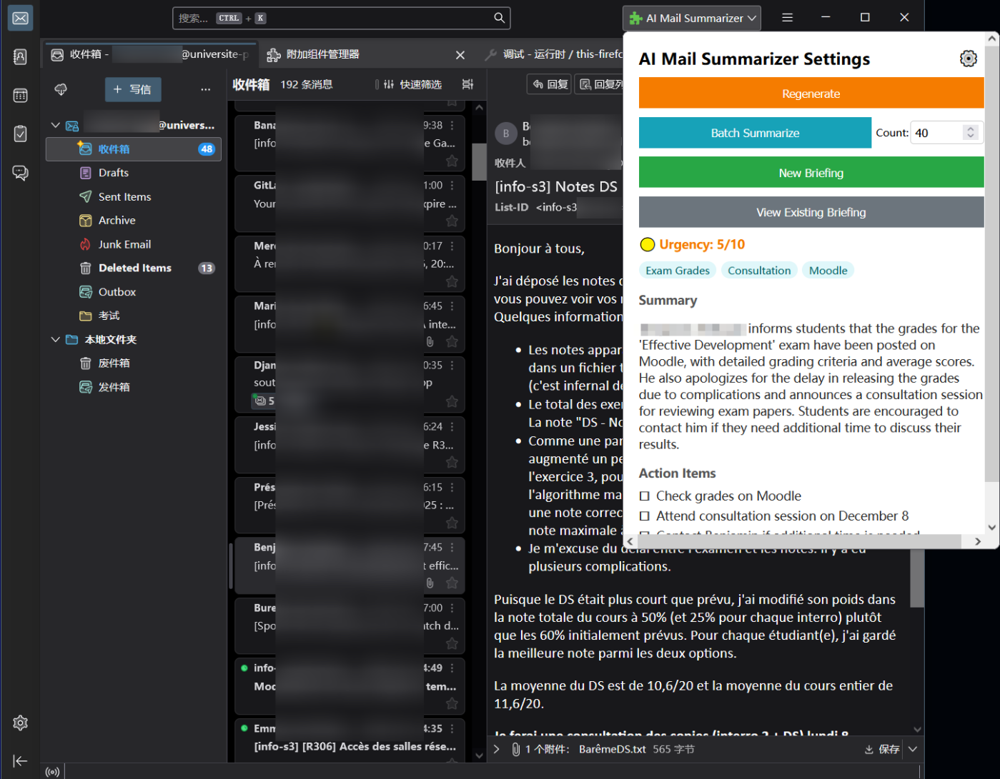
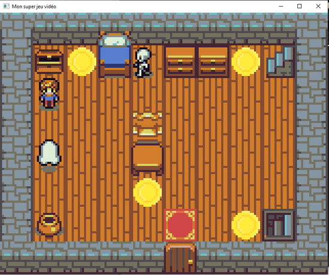

Open to an internship · from 18 Jan 2027 · 15–16 weeks 寻找实习 · 2027 年 1 月 18 日起 · 15–16 周 Recherche un stage · dès le 18 janv. 2027 · 15–16 semaines
Third-year BUT Informatique student at IUT d'Orsay (Université Paris-Saclay). I like taking things from zero to something people use: in my internship I built an LLM agent framework inside a live ERP; on my own time I ship tools people actually install. 计算机 BUT 三年级，在奥赛 IUT（巴黎萨克雷大学）。喜欢把东西从零做到真的有人用：实习时在线上运行的 ERP 里从零搭了 LLM Agent 框架，课余做别人真的会装来用的工具。 Étudiant en 3e année de BUT Informatique à l'IUT d'Orsay (Université Paris-Saclay). J'aime mener un projet de zéro jusqu'à l'usage réel : en stage, j'ai construit un framework d'agent LLM dans un ERP en production ; à côté, je publie des outils que des gens installent.




BUT Informatique, 3rd yearBUT Informatique 三年级BUT Informatique, 3e année
IUT d'Orsay · Paris-Saclay奥赛 IUT · 巴黎萨克雷大学IUT d'Orsay · Paris-Saclay
French B2 · English B2法语 B2 · 英语 B2Français B2 · Anglais B2
Chinese — native中文 母语Chinois — maternelle
Massy (91), France
On-site or hybrid可现场 / 混合办公Sur site ou hybride
Cycling, taekwondo, photography, video editing, digital art, 3D modelling, circuit design, music, video games骑行、跆拳道、摄影、视频剪辑、数字绘画、3D 建模、电路设计、音乐、电子游戏Cyclisme, taekwondo, photographie, montage vidéo, dessin numérique, modélisation 3D, électronique, musique, jeux vidéo
GitHub
contributions社区贡献contributions
- –
- pull requests个 PRpull requests
- –
- merged已合并fusionnées
- –
- repositories个仓库dépôts
- –
- issues个 Issueissues
Pull requests and issues in other people's repositories.在别人仓库里提的 PR 和 Issue。PR et issues dans d'autres dépôts.
· GitHub ↗
What are you looking for?您关注哪个方面？Qu'est-ce qui vous intéresse ?
Pick one — the skills and projects below rearrange around it. You can switch any time. 选一个，下面的技能和项目会按这个方向重新排。随时可以换。 Choisissez — compétences et projets se réorganisent en conséquence. Modifiable à tout moment.
Skills and projects open up here 选一个方向后，这里会展开技能和项目 Compétences et projets s'affichent ici
Skills技能Compétences
The whole picture, best first. Strongest in backend and AI; real-time 3D and games are the direction I'm deepening.全部能力和项目，按代表性排。后端和 AI 最强，实时 3D 和游戏是正在加深的方向。Vue complète, le plus représentatif d'abord. Points forts : backend et IA ; la 3D temps réel et le jeu sont la direction que j'approfondis.
- AI
- LLM appsAgentsTool callingMCPRAG
- Backend
- PythonFastAPINode.jsJavaC++PHP
- Front
- Vue 3JavaScriptHTML / CSS
- 3D · Apps
- Unity (C#)SwiftUI.NETElectron
- Data · Ops
- SQLSQLiteDuckDBGitLinuxNginx
From the database to the interface: I can build a whole application on my own and put it online.从数据库到界面，能独立把一个应用做完、部署上线。De la base de données à l'interface : je peux construire une application entière et la mettre en ligne.
- Backend
- PythonFastAPINode.jsSocket.ioJavaPHP
- Front
- Vue 3ViteJavaScriptHTML / CSS
- Data
- SQLPL/SQLSQLiteDuckDBPandas
- Desktop · Mobile
- ElectronTkinterSwiftUI
- Ops
- GitLinuxNginxsystemd
Putting language models into real business software: my own agent framework, tool calling and permissions, running on a live system.把大模型接进真实业务：自己设计 Agent 框架、工具调用和权限，跑在线上系统里。Intégrer des LLM dans un vrai logiciel métier : mon propre framework d'agent, appels d'outils et permissions, sur un système en production.
- Agents
- Framework designTool callingMCPSandboxingTraceable actions
- LLM
- Prompt designRAGMulti-provider APIs
- Engineering
- PythonFastAPIPandasLinux deploy
- Integration
- ERP APIsThunderbird add-onVue front-ends
Real-time 3D, games and immersive interaction. Next step: combining VR/AR with agents.实时 3D、游戏和沉浸式交互。下一步：把 VR/AR 和 Agent 结合起来。3D temps réel, jeu et interaction immersive. Prochaine étape : combiner VR/AR et agents.
- Engines
- UnityC#ShadersC++ / SDL2
- 3D
- 3D modellingVRChat worlds & avatars3D visualisation (course)
- Interaction
- Real-time multiplayerBig screen + phone controllers
- 16
- PRs merged into other people's repos个 PR 被别人的仓库合并PR fusionnées dans d'autres dépôts
- 3
- AI services shipped during the internship个实习中上线的 AI 服务services IA livrés en stage
- 1
- add-on on the Thunderbird store个插件上架 Thunderbird 官方商店module sur le store Thunderbird
- 0→1
- agent framework, built inside a live ERP在线上 ERP 里从零搭的 Agent 框架framework d'agent, dans un ERP en production
- 9
- people on the bridge project — I owned the front end人的桥牌项目里负责前端和联调personnes sur le projet bridge — j'avais le front
- 2
- games written from scratch (engine + multiplayer)个从零写的游戏（引擎 + 联机）jeux écrits de zéro (moteur + multijoueur)
- 3D
- Unity scene with my own shaders自写 Shader 的 Unity 场景scène Unity avec mes shaders
Projects项目Projets
Move over the photos to flip through · click for details鼠标划过照片翻看 · 点击看详情Survolez les photos pour feuilleter · cliquez pour le détail